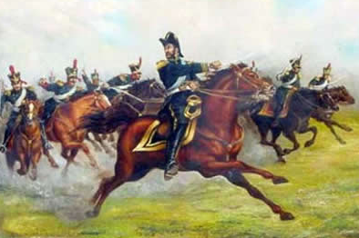
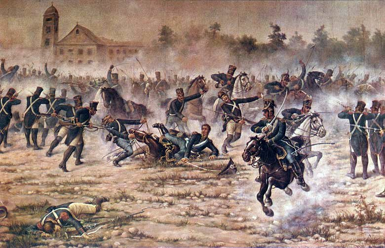
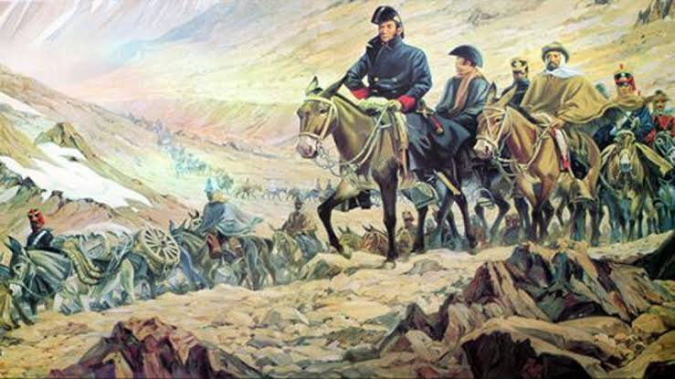
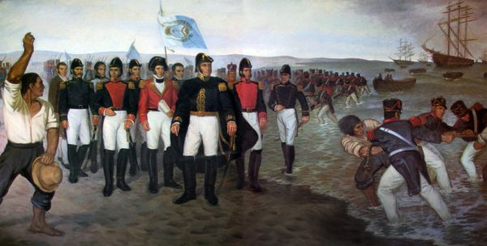
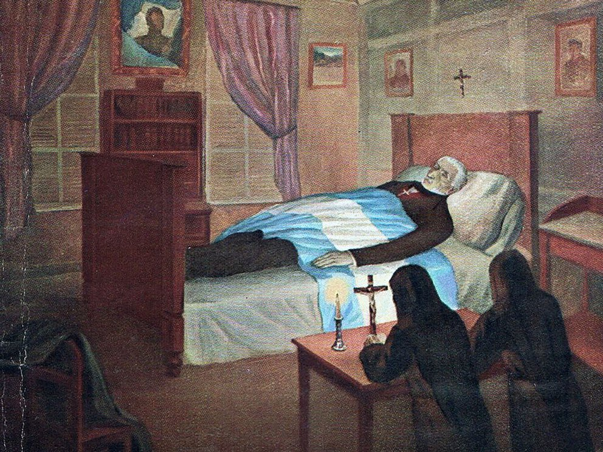

José de San Martín
José de San Martín fue uno de los principales protagonistas de la independencia de América del Sur. Nació el 25 de febrero de 1778 en Yapeyú, en el actual territorio de la provincia de Corrientes, que en ese momento formaba parte del Virreinato del Río de la Plata. Fue militar y tuvo un papel fundamental en la independencia de Argentina, Chile y Perú.
Sus primeros años
San Martín era hijo de Juan de San Martín, un militar español, y de Gregoria Matorras. Cuando era pequeño, su familia se trasladó a España. Allí comenzó su formación militar y, siendo todavía joven, ingresó al ejército español.
Durante varios años participó en diferentes conflictos militares y adquirió una importante experiencia. Sin embargo, al conocer las ideas de independencia que se estaban desarrollando en América, decidió regresar al Río de la Plata para colaborar con la emancipación de las colonias americanas.

Regreso a América y Revolución de Mayo
En 1812, San Martín llegó a Buenos Aires. Poco después creó el Regimiento de Granaderos a Caballo, una de las unidades militares más importantes de la época.
Ese mismo año se casó con María de los Remedios de Escalada, perteneciente a una importante familia de Buenos Aires. Con ella tuvo una hija llamada Mercedes Tomasa de San Martín y Escalada, quien fue una persona muy importante para él.
Uno de los primeros acontecimientos militares importantes de San Martín en América fue el Combate de San Lorenzo, ocurrido el 3 de febrero de 1813. Allí sus tropas derrotaron a las fuerzas realistas. Esta fue su primera gran victoria militar en territorio americano.


El plan para liberar América
San Martín comprendió que para asegurar la independencia de las Provincias Unidas del Río de la Plata no era suficiente con combatir a los españoles solamente desde el territorio argentino.
Por eso desarrolló un plan estratégico: cruzar la Cordillera de los Andes, liberar Chile y desde allí avanzar por mar hacia Perú, donde se encontraba uno de los principales centros del poder español.
En 1814, San Martín fue nombrado gobernador de Cuyo, con sede en Mendoza. Allí comenzó a organizar el Ejército de los Andes.
Uno de los personajes fundamentales en esta etapa fue Bernardo O'Higgins, militar y político chileno que colaboró con San Martín en la lucha por la independencia de Chile.
El Cruce de los Andes
San Martín comprendió que para asegurar la independencia de las Provincias Unidas del Río de la Plata no era suficiente con combatir a los españoles solamente desde el territorio argentino.
Por eso desarrolló un plan estratégico: cruzar la Cordillera de los Andes, liberar Chile y desde allí avanzar por mar hacia Perú, donde se encontraba uno de los principales centros del poder español.
En 1814, San Martín fue nombrado gobernador de Cuyo, con sede en Mendoza. Allí comenzó a organizar el Ejército de los Andes.
Uno de los personajes fundamentales en esta etapa fue Bernardo O'Higgins, militar y político chileno que colaboró con San Martín en la lucha por la independencia de Chile.

La expedición al Perú
Después de liberar Chile, San Martín continuó con su objetivo de llegar al Perú. En 1820, organizó una expedición marítima y desembarcó en las costas peruanas.
El 28 de julio de 1821, San Martín proclamó la Independencia del Perú en Lima. Posteriormente asumió el cargo de Protector del Perú.
Sin embargo, todavía quedaban fuerzas españolas en diferentes zonas del territorio, por lo que la independencia no estaba completamente asegurada.

El encuentro con Simón Bolívar
En 1822, San Martín se reunió en Guayaquil con Simón Bolívar, otro de los grandes líderes de la independencia sudamericana.
El contenido exacto de la conversación entre ambos no se conoce completamente, pero después de ese encuentro San Martín decidió retirarse de la campaña militar en Sudamérica y dejar a Bolívar la continuación de la lucha contra las fuerzas españolas.
Este fue uno de los momentos más importantes de su vida, porque San Martín decidió apartarse del poder y permitir que otro líder continuara el proceso de liberación.
Sus últimos años
Después de retirarse de la vida política y militar, San Martín viajó a Europa junto con su hija Mercedes. Vivió principalmente en Francia, donde pasó sus últimos años.
A pesar de encontrarse lejos de América, siguió interesado en la situación de los países que había ayudado a liberar.
José de San Martín murió el 17 de agosto de 1850, en Boulogne-sur-Mer, Francia, a los 72 años.

Principales acontecimientos de su vida
1778
Nace en Yapeyú.
1812
Regresa al Río de la Plata.
1813
Combate de San Lorenzo.
1817
Cruce de los Andes.
1821
Independencia del Perú.
1850
Fallece en Francia.